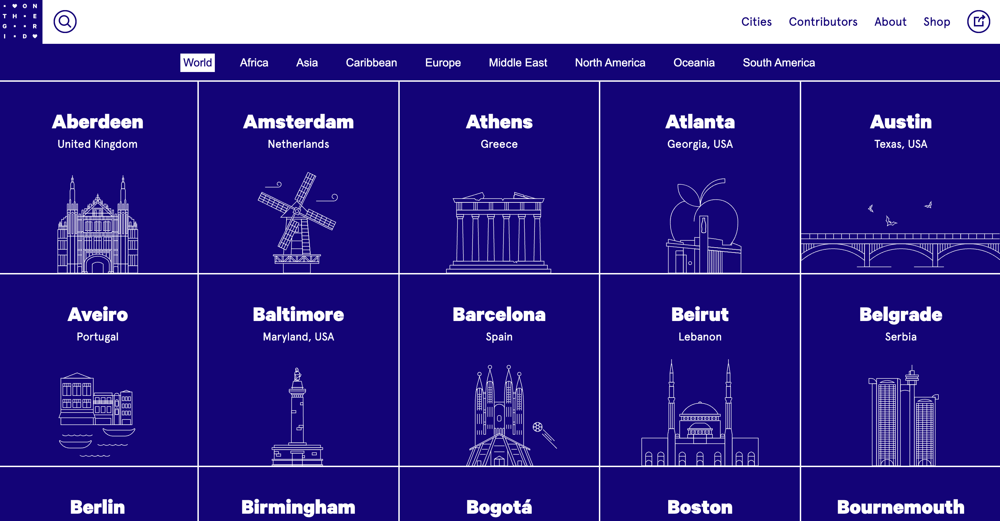

On the Grid
on the grid website
-
The contrast in text | the name of the city (bigger font size and bold)
compared to the state, country where it is located (smaller and thin font
style)
- Great contrast with color | blue and white
-
Contrast also stands out with the line art compared to the solid blue
boxes the art is in